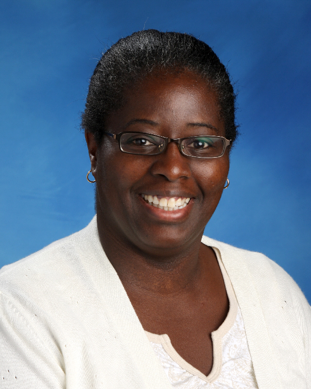

In partnership with the Ontario Principals Council, this event provided solution-based programming for organizations to Recruit, Retain and Promote from marginalized employee groups. For additional information, contact Chris D'Souza.
Supporting Educators and Administrators Engaged in Equity Work
In partnership with the Ontario Principals Council, this event provided solution-based programming for organizations to Recruit, Retain and Promote from marginalized employee groups. For additional information, contact Chris D'Souza.
This event took place on May 22nd–23rd, 2025, at:
DoubleTree by Hilton Hotel Toronto Airport West
5444 Dixie Road, Mississauga, ON, L4W 2L2


In her role as the Human Rights and Equity Advisor for the Waterloo Region District School Board, Deepa Ahluwalia helps to support the establishment of a human rights culture by helping the senior team to identify and address systematic barriers and gaps, and to also support the resolution of Code-based complaints. Deepa oversees the Human Rights Branch, whose mandate also includes providing professional learning and training as it relates to anti-oppression and human rights, and to assist in the resolution of complaints by providing coaching and conducting investigations.
Sherwyn has been committed to working towards equity in education for over 30 years. His past work in the field has included numerous public speaking engagements, workshops, writing curriculum for the Ontario Ministry of Education, and co-authoring a book. Sherwyn's work as an educator has taken him to 3 provinces where he's worked in both private and public education. He has been an elementary and secondary school administrator for 15 years and currently works in the Upper Grand District School Board as Principal of Equity and Inclusion where he continues his work growing student achievement through his passion for equity, and excellence in instructional practice. When he is at home, Sherwyn is the father of 2 teens and a greyhound, the slowest fastest dog on Earth. He also enjoys astrophotography, playing blues harmonica and working on community initiatives.


Nathalie Sirois leads the Global Centre for Pluralism's efforts to support educators and system leaders in making pluralism a lived experience in their specific contexts with a view to building inclusive societies resilient to fear and hate. She spent over 20 years in K-12 public education in a variety of roles, including community worker, teacher, instructional coach, consultant, in various system leader roles and as an advisor and coach to senior leaders. As one of the first Senior Advisors for Equity, Human Rights and Pluralism in a French-language school board in Canada, she contended daily with the systemic effects of the double minoritization of francophone students and staff from historically marginalized communities. Her journey has also brought her to offer training and to publish various resources on trauma-informed practice for educators and on educational leadership. Nathalie will be running a workshop during the summit: "Recrutement, Rétention: Reconnaissance, Appartenance."
Pauline is entering her third year as System Principal with the WRDSB after serving four years as vice principal. She joined WRDSB in 2009 after moving to Canada from the United Kingdom, bringing a wealth of leadership and teaching experience, which allowed her to lend these diverse experiences, skills and perspectives to her work of building equitable and inclusive schools within the board. Pauline was inspired to become a teacher when she was nine after meeting her paternal aunt, an elementary school teacher who was visiting with the family from Jamaica. This is why she believes in quality representation as a critical component of equitable schools and a range of lived experiences as essential in school leaders. Together with her husband of 30 years, Pauline has raised a son and enjoys time with their two chocolate labradors and their two cats.
Pam Kaur is a Superintendent of Student Achievement and Wellbeing with the Waterloo Region District School Board. In her current role, she supervises twenty-three schools, chairs the Elementary Principal Promotion Process and leads the board's Indigenous, Black & Racialized Employee Network (IBREN). Pam also supports School Learning and Improvement work as well as programs such as Nutrition for Learning and Food For Kids. Prior to this role, Pam served as a teacher, vice-principal and principal in the Toronto District School Board and as a principal in the Waterloo Region District School Board. Pam is passionate about student achievement and well-being, Truth and Reconciliation, Human Rights and Equity and Inclusion. She recognizes her own intersectionality and privilege as an English-speaking, educated, middle-class, cis-gender woman, and has experienced struggles typical of the lives of racialized people. Pam believes that justice matters, and that it matters for the success for our Black, Indigenous, racialized and 2SLGBTQ+ students, and is committed to serving the needs of all students.
✦ Hotel Accommodations are included in the registration fee ✦